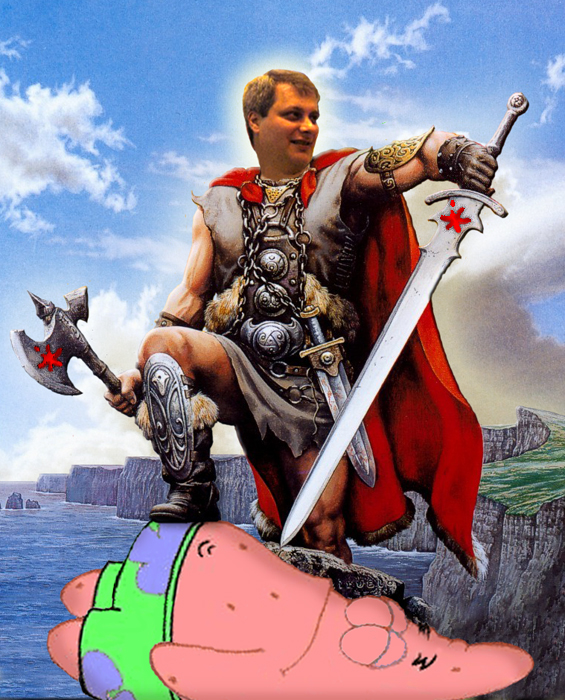

Aqui se encuentra uno de los mejores foros por decirlo para aprender ingeniera a la inversa por parte del maestro Ricardo Narvaja. Aqui se encuentra una pequeña descripcion de su biografia.
 Me llamo Ricardo Narvaja y pertenezco a la lista de correo CRACKSLATINOS, los cuales somos un grupo de amigos a los cuales nos gusta enseñar, aprender y practicar el amado arte de la Ingenieria Inversa sin fines comerciales solo por curiosidad y ganas de compartir con amigos esta hermosa actividad.
Hemos escrito muchos tutoriales, pero le damos mucha importancia a la INTRODUCCION AL CRACKING CON OLLYDBG DESDE CERO, ya que siempre intente ayudar a los que recien comienzan, a valerse por si mismos, a poder obtener sus propios programas funcionando 100% sin necesidad de pedir a nadie que se lo haga o bajar cracks por ahi, que normalmente estan llenos de virus y problemas, nada mejor que lo que uno mismo puede hacer con sus propias manos.Queda claro que aqui no hay fin de lucro ninguno, solo enseñar, esto es practica lisa y llana, para aprender nuestro amado arte, no comercio. Una mencion especial para todos mis amigos de CRACKSLATINOS ellos no son solo amigos ya, si no que les debo la vida literalmente a ellos, ya saben porque lo digo, encabezados por mi amigo REDHAWK, el Comandante de la misma y todo nuestro ejercito de amigos, tanto los avanzados como los newbies, mencionar uno a uno, seria interminable, son muchisimos y geniales todos, mi agradecimiento eterno para ellos, por acompañarme en los buenos momentos y ayudarme en los malos momentos que gracias a ellos son menos malos. Este es el link de su pagina web, donde ese encontrara la documentacion verla no pierde. Hasta pronto